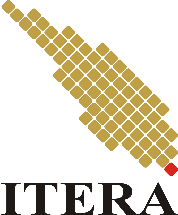
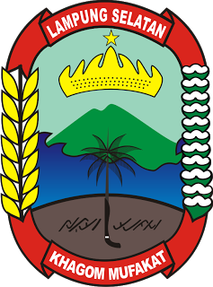
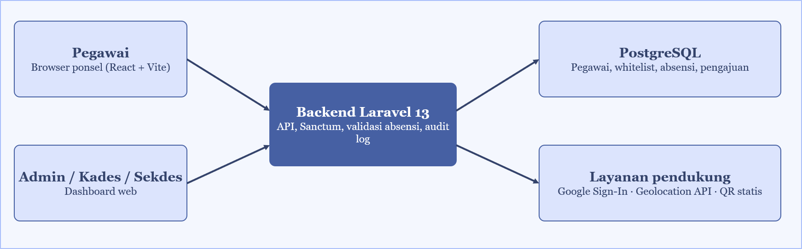
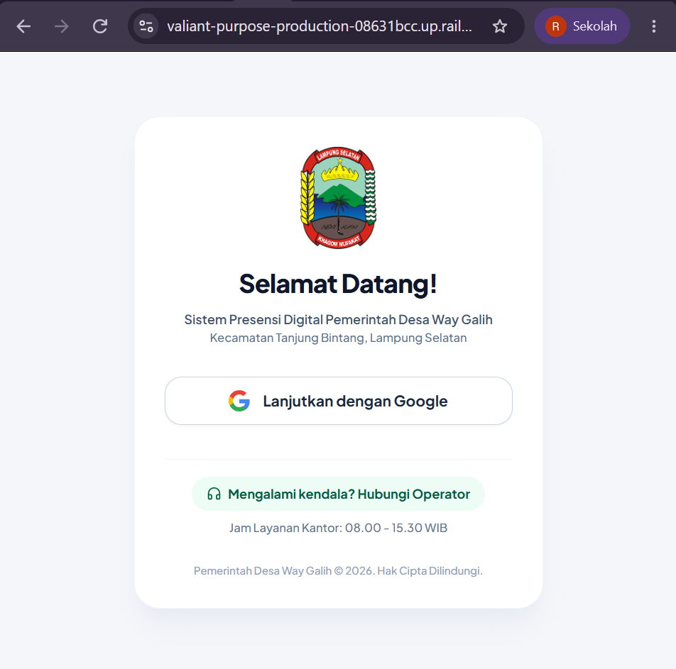
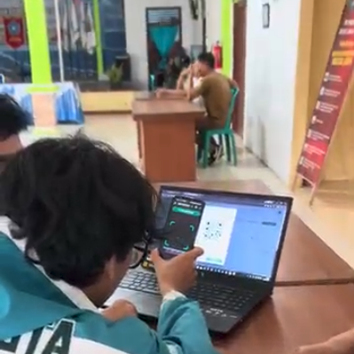

Sistem Absensi Pegawai Kantor
Desa Way Galih Berbasis Web
Presentasi Solusi dan Evaluasi Before–After
Kelompok 4 · Tim Pengembang
Informasi Akademik
Mitra dan Masalah
Profil pemangku kepentingan dan persoalan tata kelola kehadiran yang dihadapi
- • Lembaran buku absensi tanda tangan fisik terbuka.
- • Tanpa validasi lokasi fisik (rawan titip absen).
- • Rekapitulasi bulanan memakan waktu 2–3 hari kerja.
- • Pencarian data lampau sulit dan rawan sobek/hilang.
- • Absensi digital nirsentuh cepat via scan QR Code.
- • Verifikasi lokasi presisi radius GPS Balai Desa.
- • Rekapitulasi otomatis tersimpan real-time di server.
- • Riwayat kehadiran transparan dan ekspor 1-klik.
Kondisi Awal
Hasil observasi lapangan dan data survei baseline sebelum solusi diterapkan
| No | Indikator Evaluasi (Baseline Pre-Test) | Skor Rata-Rata | Kategori Persepsi | Kondisi Nyata Lapangan |
|---|---|---|---|---|
| 1 | Kemudahan proses absensi | 2,38 | Cukup Rendah | Aparatur harus antre bergantian menandatangani buku fisik di meja piket. |
| 2 | Kejelasan status kehadiran | 2,75 | Sedang | Keterangan terlambat atau hadir sering tidak dicatat dengan tegas. |
| 3 | Kemudahan menemukan riwayat | 1,63 | Sangat Rendah | Mencari data tanggal lampau harus membuka arsip tumpukan buku lama. |
| 4 | Kemudahan memeriksa data | 2,00 | Rendah | Pimpinan kesulitan memverifikasi keabsahan kehadiran secara berkala. |
| 5 | Kewajaran waktu proses | 2,00 | Rendah | Waktu rekapitulasi memakan waktu berhari-hari pada setiap akhir bulan. |
| 6 | Kesesuaian dengan kebutuhan | 2,00 | Rendah | Sistem manual tidak lagi relevan dengan tuntutan tata kelola digital. |
SDGs Desa dan Target
Penyelarasan target kegiatan terhadap indikator resmi proposal pengajuan
SDGs Desa 16: Desa Damai Berkeadilan
Mendukung terwujudnya kelembagaan dan tata kelola pemerintah desa yang akuntabel, transparan, dan berintegritas tinggi.
| Indikator | Kondisi Awal | Target Terukur Proposal | Cara Pembuktian |
|---|---|---|---|
|
16.6.2.(a)
Kode resmi proposal
|
Pencatatan kehadiran staf kantor desa masih dilakukan secara manual menggunakan buku fisik, tanpa verifikasi lokasi kerja. | Tersedianya sistem absensi digital berbasis QR Code dan GPS yang dipakai oleh staf/perangkat desa Way Galih dan mendukung pencatatan kehadiran yang terintegrasi. |
|
Solusi yang Dibangun
Pemetaan dari masalah operasional mitra ke fitur sistem dan implementasi teknologi
Rawan titip absen dan antre fisik.
Login Google resmi (whitelist email admin) dan pemindaian Absen QR Kantor fisik.
Tidak ada bukti fisik kehadiran.
Validasi radius GPS Balai Desa (100 m), QR statis terenkripsi, waktu dicatat server NTP.
Rawan salah hitung tiap bulan.
Dashboard analitik admin, rekapitulasi per periode/pegawai, dan fitur ekspor laporan.
Surat tugas luar kerap tercecer.
Pengajuan izin + persetujuan; Absen Tugas Luar dengan upload 2 foto, deskripsi tugas, & GPS.
Rancangan Solusi
Diagram arsitektur perangkat lunak dan aliran data proses absensi terpadu

Demonstrasi Produk
Skenario penggunaan sistem secara utuh beserta penanganan kondisi gagal
Skenario Pengujian Negatif:

assets/screenshots/.
Inovasi dan Kesiapterapan
Diferensiasi terhadap cara lama dan posisi Tingkat Kesiapterapan Teknologi (TKT)
Yang Berbeda: Absensi nirsentuh melalui pemindaian QR Code yang divalidasi geofencing GPS Balai Desa dan langsung terdata secara terpusat di server.

Desain Evaluasi
Metodologi pengukuran before–after, struktur instrumen, dan dataset evaluasi
| Dimensi Ukuran | Cara Mengukur | Instrumen | Partisipan Data | Waktu Pelaksanaan |
|---|---|---|---|---|
| Kemudahan proses & waktu | Rata-rata butir kemudahan proses & kewajaran waktu | Kuesioner pre-test & post-test | 8 responden | 23 Nov 2026 |
| Kejelasan & riwayat | Rata-rata butir kejelasan status & kemudahan lacak riwayat | Kuesioner pre-test & post-test | 8 responden | 23 Nov 2026 |
| Pemeriksaan data & kebutuhan | Rata-rata butir kemudahan periksa data & kesesuaian kebutuhan | Kuesioner pre-test & post-test | 8 responden | 23 Nov 2026 |
| Kemudahan penggunaan total | Rata-rata seluruh 6 indikator | Kuesioner Likert 1–5 | 8 responden | 23 Nov 2026 |
• Post-test: 8 responden yang sama, kuesioner identik.
Hasil Before dan After
Perbandingan perubahan rata-rata 6 indikator evaluasi sebelum dan sesudah penerapan
| Indikator Evaluasi | Sebelum | Sesudah | Perubahan |
|---|---|---|---|
| Kemudahan proses absensi | 2,38 | 4,25 | +1,87 |
| Kejelasan status kehadiran | 2,75 | 4,63 | +1,88 |
| Kemudahan menemukan riwayat | 1,63 | 4,50 | +2,87 |
| Kemudahan memeriksa data | 2,00 | 4,75 | +2,75 |
| Kewajaran waktu proses | 2,00 | 4,25 | +2,25 |
| Kesesuaian dengan kebutuhan | 2,00 | 4,63 | +2,63 |
| RATA-RATA TOTAL | 2,13 | 4,50 | +2,37 |
Penerimaan Pengguna
Partisipasi mitra, umpan balik kualitatif, dan tindak lanjut perbaikan
• Post-test: Fitur QR dinilai sangat membantu; memberikan skor sempurna 5/5 dan tidak melaporkan hambatan alur.
Tindak Lanjut Sistem: Menambahkan indikator status sinyal GPS yang komunikatif serta tombol "Coba Lagi" (retry) otomatis agar pegawai tidak perlu me-refresh halaman web secara manual.
Capaian terhadap Target SDGs
Perbandingan janji proposal dengan hasil pengujian nyata black-box testing
| Indikator | Target Proposal | Hasil Nyata Lapangan | Status Capaian | Penjelasan Kendala / Evaluasi |
|---|---|---|---|---|
| 16.6.2.(a) | Tersedia sistem absensi digital QR Code + GPS yang dipakai staf desa dengan pencatatan terintegrasi. | Sistem dipakai aparatur desa; 27 dari 31 skenario black-box testing berhasil lulus. | Tercapai Sebagian |
3 skenario FAIL: (1) Pencarian tabel whitelist belum dinamis, (2) Penonaktifan akun tidak langsung me-logout sesi aktif, (3) Pengaturan jam kerja belum tersinkron otomatis. 1 skenario BLOCKED: Fitur edit data profil pegawai belum tersedia di frontend. |
| Verifikasi lokasi dan data riwayat serta rekapitulasi bagi pihak desa. | Validasi radius Balai Desa (100 m) aktif; riwayat dan rekap dapat diekspor admin. | Tercapai | Radius final ditetapkan berdasarkan hasil kalibrasi uji lapangan bersama operator desa. |
- Pencarian whitelist belum berfungsi sesuai harapan.
- Penonaktifan akun belum langsung mengakhiri sesi aktif.
- Pengaturan jam kerja belum tersinkronisasi.
- Fitur pengeditan pegawai belum tersedia di antarmuka.
- Pengujian tidak dapat dilanjutkan sampai fitur diimplementasikan.
- Dicatat sebagai backlog pengembangan lanjutan.
Analisis dan Keterbatasan
Mengapa hasil evaluasi demikian dan pengakuan terbuka atas batasan penelitian
- Fitur Whitelist & Google Login: Membatasi akses presensi hanya untuk aparatur desa yang berhak.
- Geofencing & Scan QR: Menghilangkan manipulasi kehadiran fisik di luar kantor Balai Desa.
- Waktu Server NTP: Mencegah manipulasi waktu pada pengaturan jam internal perangkat HP pegawai.
- Penyimpanan Digital: Rekapitulasi otomatis menggantikan hitung manual berlembar-lembar.
- Faktor Eksternal: Antusiasme teknologi baru (novelty effect) dan pendampingan intensif mahasiswa selama uji coba.
- Cakupan Pengguna: Hanya diuji pada 1 unit kantor desa, belum mencakup variasi desa lain.
- Durasi Uji Singkat: Uji coba terbatas pada akhir proyek (~3 minggu), belum mencerminkan adopsi jangka panjang.
- Tanpa Kelompok Kontrol: Evaluasi sebelum-sesudah tanpa pembanding murni dari faktor eksternal.
- Batasan Teknis GPS: Validasi browser belum memitigasi Fake GPS / Mock Location di tingkat OS.
- Ukuran Sampel Terbatas: Analisis 8 responden di satu kantor desa belum dapat digeneralisasi untuk populasi luas.
Kendala dan Pelajaran
Tantangan yang dihadapi, langkah penanganan tim, dan pelajaran berharga yang diperoleh
| Kendala yang Terjadi | Penanganan oleh Tim | Pelajaran Berharga |
|---|---|---|
|
Perubahan timeline proyek Perbedaan jadwal mahasiswa dengan agenda kedinasan kantor desa. |
Komunikasi intensif berkala antara tim mahasiswa dan mitra serta koordinasi mingguan untuk fiksasi timeline kunjungan. | Pentingnya menetapkan jadwal individu per minggu dan menyediakan alokasi waktu fleksibel (buffer time). |
|
Kesalahan integrasi frontend & backend Inkonsistensi struktur response JSON API dan state frontend. |
Perbaikan kode bersama dan sinkronisasi kontrak endpoint API secara ketat antara developer React dan Laravel. | Pentingnya diskusi aktif harian dan pembuatan dokumentasi API collection sejak awal fase pengembangan. |
|
Akurasi GPS & potensi Fake GPS Sinyal GPS indoor melemah dan kerentanan spoofing web browser. |
Menyesuaikan toleransi radius kantor (100 m) dan merencanakan Aplikasi Mobile. | Sistem absensi berbasis web murni rentan manipulasi lokasi sehingga membutuhkan mekanisme verifikasi fisik ganda. |
|
Belum ada fitur absensi jam pulang Sistem MVP baru mencakup pencatatan kehadiran masuk pagi. |
Mendefinisikan modul absensi jam pulang sebagai backlog prioritas tinggi pada rilis lanjutan. | Pencatatan jam kepulangan mutlak diperlukan untuk menjaga integritas dan kedisiplinan kerja pegawai secara utuh. |
Keberlanjutan dan Serah Terima
Rencana keberlanjutan operasional, penanggung jawab mitra, dan komitmen pemeliharaan
| Aspek Keberlanjutan | Rencana Pelaksanaan | Penanggung Jawab |
|---|---|---|
| Pengelolaan Harian | Pengelolaan data pegawai desa, konfigurasi whitelist email, persetujuan pengajuan izin, dan pemantauan harian. | Pak Sadewo Operator Balai Desa Way Galih |
| Pemeliharaan Teknis | Dukungan teknis, perbaikan bug darurat, dan konsultasi pengoperasian sistem maksimal sampai 23 Desember 2026. | Maulana Muhammad Rizki Project Manager Kelompok 4 |
| Estimasi Biaya Operasional | Alokasi biaya operasional (hosting cloud server dan domain desa): Rp620.000. | Pemerintah Desa Way Galih Alokasi Anggaran Desa |
| Pelatihan Pengguna Baru | Pelatihan bagi admin dan staf kantor desa baru dengan demo langsung menggunakan aplikasi. | Pak Sadewo Operator Balai Desa Way Galih |
| Serah Terima Produk | Rencana sosialisasi sistem, penyerahan akun master admin, dokumen user manual, dan penandatanganan berita acara pada 23 November 2026. | Maulana Muhammad Rizki & Pak Sadewo |
Rekomendasi dan Tindak Lanjut
Langkah perbaikan strategis yang diurutkan menurut prioritas dan dampak bagi mitra
Perkuat Validasi Anti-Kecurangan (Mitigasi Fake GPS) Prioritas 1 · Dampak Tinggi
Dasar Evaluasi: Keterbatasan validasi GPS browser umum yang rentan dimanipulasi dengan software mock location.
Tindak Lanjut: Migrasi sistem ke Progressive Web App (PWA) dengan deteksi mock provider atau menerapkan Dynamic Rotating QR Code (refresh otomatis per 30 detik pada layar kantor).
Pelaksana: Pengembang sistem lanjutan.
Tambahkan Fitur Absensi Jam Kepulangan (Check-out) Prioritas 2 · Dampak Tinggi
Dasar Evaluasi: Rilis MVP baru mengakomodasi absensi masuk pagi hari sehingga jam kerja efektif harian belum terhitung utuh.
Tindak Lanjut: Mengembangkan jendela waktu absensi pulang sore hari dengan validasi lokasi serupa dan kalkulasi akumulasi jam kerja bulanan.
Pelaksana: Pengembang sistem lanjutan & Tim Pengembang Kelompok 4.
Sempurnakan Sinkronisasi Jam Kerja & Manajemen Akun Prioritas 3 · Dampak Sedang
Dasar Evaluasi: 3 skenario gagal pada pengujian black-box (pencarian whitelist, penonaktifan sesi login, sinkronisasi jam dinamis).
Tindak Lanjut: Menyempurnakan query pencarian whitelist di backend, mengaktifkan instant token revocation pada Laravel Sanctum saat akun dinonaktifkan, dan sinkronisasi otomatis zona waktu server.
Pelaksana: Backend Developer & Admin Desa.
Terima Kasih
Sesi tanya jawab, diskusi akademik, dan tautan akses luaran proyek
Terima Kasih atas Waktu dan Masukannya
Kami terbuka terhadap pertanyaan, kritik, dan saran dari Dosen Pengampu serta rekan-rekan mahasiswa. Setiap masukan akan menjadi bahan perbaikan sistem absensi Desa Way Galih ke depan.
Email: maulana.124140008@student.itera.ac.id
Institut Teknologi Sumatera · 2026